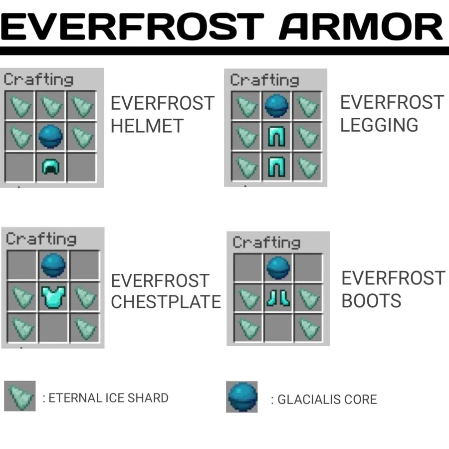
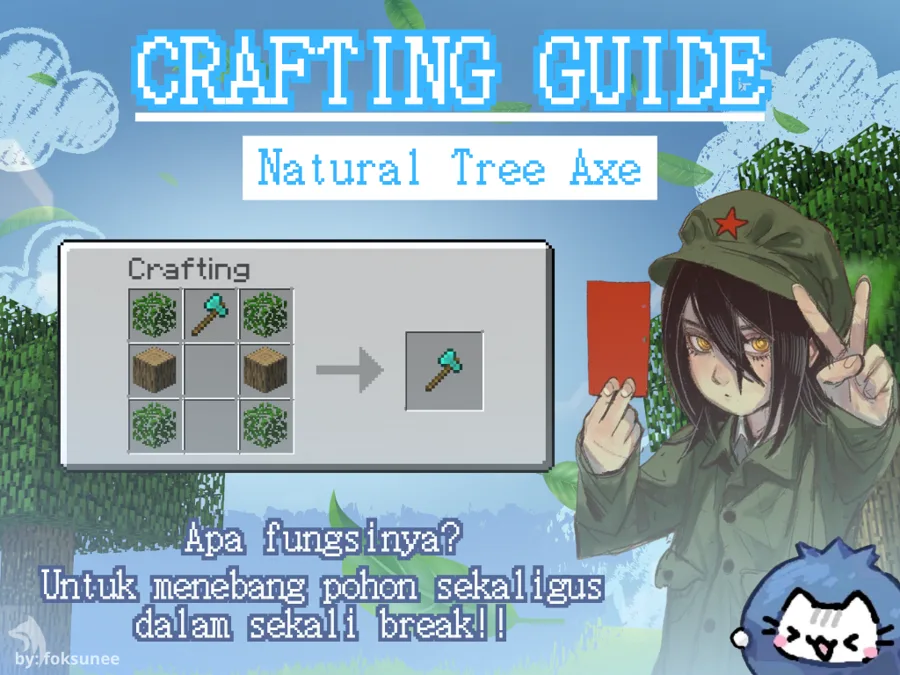

🌸
Spring (Musim Semi)
30 hariWaktu terbaik untuk bertani. Tanaman tumbuh sangat cepat dan hewan-hewan bermigrasi dengan aman.
Cek apa yang baru di Season 2 yuk~
play.chaatown.my.id
Ini fitur server untuk saat ini. Fitur baru akan terus ditambahkan secara bertahap.
Sistem level dengan 13 skill ala Skyrim, plus 6 ras karakter yang bisa kamu pilih. Tiap ras punya kelebihan dan kekurangannya sendiri.
Keturunan naga kuno. Kulitnya sekeras sisik naga, jadi punya pertahanan alami terhadap damage.
KelebihanUkuran tubuh: 120% (lebih tinggi)
KekuranganRas penghuni hutan yang anggun dan magis. Afinitas sihirnya bikin mereka jago enchanting, dan umur panjangnya menyempurnakan kemampuan bertarung mereka. Tapi tubuhnya yang ringan bikin mereka lebih rapuh.
KelebihanPenguasa samudra dalam. Unggul dalam aktivitas di bawah air dan mengumpulkan harta dari laut.
KelebihanUkuran tubuh: 100% (normal)
KekuranganPeri kecil yang sangat dekat dengan alam. Sangat lincah dan susah ditangkap, tapi juga sangat rapuh.
KelebihanUkuran tubuh: 60% (sangat kecil)
KekuranganRas kekar berjanggut yang tinggal di bawah tanah. Keahlian Mining dan Smithing mereka tak tertandingi, tapi kaki pendeknya bikin susah lari.
KelebihanRas besar dan kasar yang dibangun untuk kekuatan fisik. Tubuhnya yang tebal bikin mereka jadi petarung garis depan yang hebat.
KelebihanUkuran tubuh: 115% (lebih tinggi)
KekuranganMonster dan boss kustom dengan skill unik.
Siklus 4 musim yang mengubah warna daun, cuaca, dan kecepatan tumbuh tanaman.
Duduk dan berbaring di mana saja.
Toko berbentuk menu (GUI) untuk jual-beli item.
Toko peti yang bisa dibuat sesama pemain.
Pilih pekerjaan untuk mendapatkan uang dan EXP.
Klaim wilayahmu pakai golden shovel, supaya bangunan dan barangmu aman dari maling dan perusak.
Mencatat riwayat block dan peti, jadi kerusakan akibat griefing bisa dikembalikan (rollback).
Login pakai password untuk mengamankan akunmu.
NPC interaktif dan teks melayang di server.
Menu navigasi kustom, plus tampilan TAB dan scoreboard yang estetik.
Teleportasi acak dan banyak dunia dalam satu server.
Chat di game tersambung langsung ke server Discord.
Pemain dari berbagai versi Minecraft tetap bisa masuk.
Mengatur pangkat dan izin pemain, seperti Member, VIP, dan Admin.
Struktur dan dungeon berskala mega, seperti pohon raksasa Alfheim. Butuh berjam-jam untuk dijelajahi, penuh tantangan endgame, teka-teki, mekanik kunci ilahi (Divine Keys), dan loot legendaris.
Merombak total Nether jadi jauh lebih hidup dan berbahaya, dengan puluhan bioma baru, benteng masif, monster kustom, serta senjata dan item magis unik. Tidak perlu mod di sisi pemain.
Merombak total The End jadi megah, gelap, dan atmosferik, dengan bioma lanskap kristal dan tebing curam setinggi 384 block.
Puluhan struktur baru di Overworld, mulai dari reruntuhan, menara, rumah kuno, sampai dungeon kecil, biar menjelajah makin seru.
Mau langsung mabar dan seru-seruan di ChaaTown? Ikuti langkah mudahnya di bawah ini. Server ini crossplay, jadi Java dan Bedrock bisa main bareng.
play.chaatown.my.idplay.chaatown.my.id5167Tulis alamat tanpa https://
Saat pertama kali masuk, akan muncul pop-up dari AuthMe. Ketik password buatanmu sendiri, misalnya miaw123.
Ingat baik-baik password itu, karena akan dipakai setiap kali login di sesi berikutnya. Jangan pakai password yang sama dengan akun lain.
Selamat berpetualang dan sampai bertemu di dalam game!
Masuk ke Discord untuk kenalan, tanya-tanya, dan ikut event berikutnya.
Masuk Discord Chatizen Guild BarUbah tampilan skin NPC yang kamu nikahi supaya sesuai seleramu.
Pertanyaan di chat umum bisa tenggelam. Lewat tiket, admin melihat masalahmu langsung dan menjawabnya satu per satu.
Lupa password AuthMe atau akun tidak bisa masuk.
Konfirmasi pembayaran dan tanya soal rank.
Ada yang melanggar aturan, atau ada yang error di server.
Apa saja seputar server yang belum terjawab di halaman ini.
Channel tiket sedang disiapkan. Sampai siap, kamu bisa menghubungi admin langsung lewat Discord.
Command dasar yang sering dipakai di server. Ketik di chat game, dan ganti bagian yang diapit tanda < > dengan isimu sendiri.
/spawnKembali ke Spawn utama server/rtpTeleportasi acak ke hutan atau wilderness/tpa <nama_player>Minta teleport ke lokasi temanContoh: /tpa NovvaMC080/tpacceptTerima permintaan teleport dari teman/tpdenyTolak permintaan teleport dari teman/sethome <nama_home>Simpan titik rumahContoh: /sethome base/home <nama_home>Teleport ke rumahContoh: /home base/homesLihat semua titik rumah milikmu/delhome <nama_home>Hapus titik rumah yang tidak dipakai/kitsBuka menu GUI pilihan kit/kit <nama_kit>Ambil kit langsung lewat chatContoh: /kit novice/balCek saldo uang saat ini/pay <nama_player> <jml>Transfer uang ke temanContoh: /pay NovvaMC080 5000/baltopLihat 10 pemain terkayaHalo warga Chaatown! Mau jualan hasil farming, hasil mining, atau barang langka untuk menambah saldo uangmu? Kamu bisa membuat toko peti sendiri dengan fitur QuickShop.
Membuat toko peti khusus untuk rank Novice ke atas (Novice, Journeyman, Master). Pemain biasa (Default) hanya bisa membeli atau menjual di toko yang dibuat pemain lain.
1Letakkan Chest, Trapped Chest, atau Barrel di area lahan (claim) milikmu.
2Pegang item yang ingin kamu jual di tangan utama (main hand).
3Klik Kanan pada peti menggunakan item tersebut.
4Ketik harga jual yang kamu inginkan di Chat (misalnya 500), lalu tekan Enter.
5Toko berhasil dibuat! Tampilan item melayang akan muncul di atas peti.
1Klik Kanan pada peti tokomu yang sudah jadi untuk membuka menu UI QuickShop.
2Klik tombol atau ikon "Switch to Buying", atau ketik /quickshop buy.
3Pastikan kamu punya saldo uang yang cukup agar peti bisa membayar player lain yang menjual item kepadamu.
1Letakkan Chest atau Barrel di area lahan milikmu.
2Pegang item yang ingin dijual di tangan karaktermu.
3Lakukan Jongkok (Sneak) + Ketuk/Tahan (Tap/Long Press) pada peti menggunakan item tersebut.
4Ketik harga jual di kolom Chat, lalu tekan Send/Kirim.
▶Membeli item: Ketuk atau Klik Kanan pada peti toko milik player lain, lalu ketik jumlah item yang ingin kamu beli di chat.
▶Menjual item: Ketuk atau Klik Kanan pada peti toko mode beli, lalu ketik jumlah item yang ingin kamu jual dari inventory.
Untuk mengelola tokomu tanpa harus merusak peti.
/quickshop price <harga_baru>Mengubah harga item di toko yang sedang kamu lihat/quickshop amount <jumlah_baru>Mengubah jumlah item transaksi per klik/quickshop removeMenghapus atau mencabut status toko dari peti/quickshop staff add <nama_player>Menambahkan teman sebagai staff pengelola tokomu/quickshop find <nama_item>Mencari lokasi toko terdekat yang menjual item tertentuKenalin, ini Everfrost set armor, set armor dari ChaaTown yang berasal dari realm SnowBound.

Butuh 1 set full diamond armor, serta beberapa item yang hanya bisa didapatkan di SnowBound realm, yaitu Eternal Ice Shard dan Glacialis Core.
Bikin kita tahan dengan suhu panas yang luar biasa di EmberBound realm.
OHH HELL YEAH!! Bisa banget.
Untuk mendapatkan Eternal Ice Shard dan Glacialis Core, kita harus mengalahkan boss di SnowBound realm, yaitu Glacial Wither (seekor Wither yang punya kekuatan es).
Haii! Kenalin, ini dia Natural Tree Axe, custom item dari ChaaTown yang bikin nebang pohon jadi lebih praktis~

Natural Tree Axe bisa di-craft menggunakan kapak apa saja!
Kalau kapak yang kamu pakai punya enchantment, enchantment-nya akan hilang setelah di-craft jadi Natural Tree Axe.
Gampang kok! Cukup break satu log di bagian tengah pohon, lalu biarkan Natural Tree Axe bekerja~
Natural Tree Axe hanya bisa menebang seluruh pohon kalau bagian log dan leaves-nya terhubung jadi satu kesatuan. Kalau ada bagian yang terputus, belum tentu semuanya ikut tertebang. Agak tricky di awal, tapi cobain aja! Tetap useful banget, apalagi buat pohon yang gede~
Durability kapak ikut terpengaruh ukuran pohon! Makin besar atau makin banyak bagian pohonnya, makin banyak durability yang berkurang. Jadi jangan kaget kalau pohon raksasa bikin kapaknya lebih cepet capek hehe~
BISA!! Setelah jadi Natural Tree Axe, kapaknya tetap bisa di-enchant seperti axe biasa. Tinggal enchant lagi setelah proses craft selesai~
Halo Chatizen! Selamat datang di sistem musim dinamis ChaaTown. Di sini dunia tidak lagi statis: langit, warna dedaunan, cuaca, sampai perilaku monster berubah secara alami seiring waktu. Pelajari mekaniknya supaya kamu tidak salah langkah saat bertahan hidup.
Dunia berjalan dalam siklus tahunan yang teratur. Setiap 1 tahun di game terdiri dari 4 musim utama, dan tiap musim berlangsung tepat 30 hari Minecraft. Satu hari di server sama dengan satu jam di dunia nyata, jadi satu musim berlangsung sekitar 30 jam dunia nyata.
Waktu terbaik untuk bertani. Tanaman tumbuh sangat cepat dan hewan-hewan bermigrasi dengan aman.
Suhu udara meningkat tajam. Jika hujan turun, para Villager akan memilih bertransaksi di dalam rumah demi kenyamanan.
Daun-daun di bioma seperti Taiga dan Birch berubah warna menjadi keemasan, dan kamu akan menemukan banyak jamur tumbuh. Persiapkan persediaan makanan sebelum musim dingin!
Salju tebal menutupi permukaan tanah secara berkala, dan permukaan air terbuka membeku menjadi es.
Hewan dan tanaman akan sulit kamu temukan di musim ini. Buatlah greenhouse dan barn untuk menjaga stok makananmu!
Bertani sekarang lebih menantang!
Setiap benih (seed) punya informasi musim tanamnya masing-masing. Kalau kamu menanam benih di luar musim favoritnya, tanaman itu tidak akan tumbuh atau bahkan mati.
Buat Seasonal Clock di crafting table dengan jam biasa dan daylight detector di atasnya. Klik kanan jam ini untuk membuka panel yang menampilkan ramalan cuaca (kapan hujan), ramalan musim, serta jadwal event hari ini dan besok.
Plugin ini membuka gerbang ke dua dunia ekstrem dengan monster yang jauh lebih kuat. Portalnya bisa kamu buat sendiri dengan struktur menyerupai Nether Portal biasa.
Cara masuk: Bangun bingkai portal dengan Glowstone, lalu aktifkan dengan melempar Snowball ke bagian tengah portal.
Kondisi lingkungan: Jarak pandang sangat rendah karena badai salju (blizzard), dataran membeku, dan suhu ekstrem.
Mekanik monster: Monster di sini punya varian es. Serangan mereka bisa memberi efek Slow (memperlambat) dan Freeze (membekukan darahmu).
Cara masuk: Bangun bingkai portal dengan Nether Wart Block, lalu aktifkan dengan Flint and Steel.
Kondisi lingkungan: Langit membara dan tanah dipenuhi hawa panas ekstrem yang melelehkan.
Peluang hidupmu di sini rendah. Usahakan memakai full set Everfrost armor.
Mekanik monster: Monster di realm ini 4x lebih kuat dibanding dunia biasa! Serangan mereka otomatis membakarmu dan memberi damage yang berkali-kali lipat lebih sakit.
Secara acak atau di waktu tertentu, dunia ChaaTown bisa mengalami fenomena alam musiman yang langka:
Langit berubah merah, monster menjadi jauh lebih agresif, dan tingkat spawn mereka meningkat pesat.
Badai energi yang membawa efek-efek aneh ke lingkungan sekitar.
Waktu perayaan di mana kamu bisa mendapatkan keuntungan tertentu, tergantung jenis musimnya.
Waktu dan musim berjalan terpisah dari dunia atas! Jangan kaget kalau di Overworld sedang Winter, tetapi di Nether kamu justru menemui fenomena alam atau hawa ekstrem yang berbeda.
Tempat ini abadi dan hampa, sehingga siklus cuaca maupun 4 musim normal dari dunia atas tidak berlaku di sini demi menjaga keaslian dimensinya.
Halo Chatizen! Pernah bosan dengan Villager lama yang kaku dan cuma mondar-mandir? Di ChaaTown, para Villager sekarang sudah naik kelas menjadi Realistic Villager! Mereka punya nama, perasaan, keluarga, sampai insting bertarung demi melindungi desanya. Pelajari mekanik penting, fitur asmara, dan cara membuat item khusus mereka supaya kamu bisa mengelola penduduk desamu dengan maksimal.
Villager yang kamu nikahkan dengan Wedding Ring akan tinggal bersama, berbagi inventori tas, dan punya silsilah keluarga yang tercatat di sistem.
Pasangan Villager bisa punya anak. Kalau salah satu orang tuanya mati, anak-anak atau hewan peliharaan mereka otomatis dirawat oleh anggota keluarga yang masih hidup.
Pakai Family Whistle untuk mengumpulkan satu keluarga utuh dalam sekejap demi keselamatan mereka.
Saat terjadi serangan (Raid), Villager yang memegang senjata tidak akan sembunyi! Mereka ikut mengepung dan memburu monster memakai Crossbow dengan efek Multishot.
Villager Farmer sekarang bisa memakai cangkul (hoe) untuk membuka lahan baru, dan mereka tidak merusak atau menginjak tanaman mereka sendiri.
Jangan sembarangan menaruh atau membuka peti di dekat mereka. Villager sekarang bisa menjarah (loot) isi chest kalau mendadak butuh item tersebut!
Villager otomatis menyerang pemain yang memakai Monster Head (kepala Zombie atau Creeper) karena mengira kamu monster sungguhan!
Kalau Villager andalan atau trader bintang 5 milikmu mati diserang zombi, kamu bisa membangkitkannya lagi dengan ritual eksperimental ini:
1Ambil kepala: Saat mati, Villager menjatuhkan Kepala (Head) di lokasi kematiannya. Segera ambil kepala tersebut!
2Craft The Cross: Buat The Cross (salib) dari Stick, resepnya ada di bagian bawah. Pastikan fitur Cross aktif di config server, karena beberapa server mengaturnya supaya kepala Villager bisa langsung dihidupkan tanpa salib.
3Bangun altar: Susun beberapa Block of Emerald membentuk monumen atau altar kecil di tanah, lalu letakkan kepala Villager di atasnya.
4Mulai ritual: Picu ritualnya dengan membakar area tiang atau altar tersebut memakai Flint and Steel.
5Cling! Villager-mu hidup kembali dengan data memori dan hubungan yang tetap tersimpan!
Item khusus untuk mengendalikan hubungan sosial dan takdir hidup para Villager. Sebagian dibuat di Crafting Table, sebagian didapat lewat interaksi di dalam game. Resep bisa berbeda tergantung config server.
Resep: Susun 7 Gold Ingot membentuk lingkaran (kiri dan kanan atas, kiri dan kanan tengah, serta seluruh baris bawah), lalu letakkan 1 Diamond di tengah atas sebagai mata cincin. Kotak tengah dibiarkan kosong. Ini resep bawaan (default), Admin server bisa mengubahnya lewat config.
Fungsi: Pegang cincin ini, lalu klik kanan pada dua Villager dewasa yang saling menyukai untuk menjodohkan dan menikahkan mereka secara resmi!
Cara mendapatkan: Cari Villager berprofesi Cleric (Pendeta) yang punya workstation Brewing Stand, lalu ajak bicara untuk meminta atau membeli Divorce Paper.
Fungsi: Berikan item ini ke pasanganmu untuk langsung bercerai, dengan pengurangan reputasi yang jauh lebih sedikit dibanding cerai paksa.
Resep: Susun 3 Iron Ingot membentuk huruf L terbalik (pojok kiri atas, tengah atas, dan tengah).
Fungsi: Saat kamu atau kepala keluarga Villager meniup peluit ini, seluruh anggota keluarganya (istri/suami dan anak-anak) langsung teleport berkumpul ke lokasi suara. Sangat berguna untuk mengevakuasi desa ke bunker saat ada Raid!
Resep: Susun Stick membentuk salib di Crafting Table (tengah atas, kiri, tengah, kanan, dan tengah bawah). Ini resep standar, bisa berbeda tergantung config server.
Fungsi: Dipakai dalam ritual menghidupkan kembali Villager yang mati. Di beberapa server fitur ini dimatikan, jadi kepala Villager bisa langsung dihidupkan tanpa salib.
Di ChaaTown, setiap aktivitas punya skill-nya sendiri. Makin sering kamu melakukannya, makin tinggi level skill-nya, dan makin banyak perk dan ability yang terbuka. Klik nama skill untuk melihat penjelasannya.
Smithing adalah keahlianmu dalam membuat tools dan armor. Makin tinggi level Smithing-mu, makin bagus kualitas equipment yang kamu buat dan makin baik juga propertinya.
Properti ini bisa berupa armor value, durability, damage, attack speed, dan kecepatan proyektil, dan mungkin properti lain tergantung pengaturan server.
Craft tool atau equipment apa saja. Makin mahal bahannya dan makin banyak bahan yang dipakai, makin banyak EXP yang kamu dapat.
EXP berkurang kalau kamu craft tools dari bahan yang tier-nya jauh di atas levelmu, begitu juga kalau bahannya jauh di bawah levelmu.
Setiap selisih satu tier, EXP dibagi dua. Contoh: di level 40 (tier iron/gold), EXP dari stone dan diamond jadi setengah, sedangkan wood dan netherite jadi seperempat. Satu-satunya pengecualian: di level 80 (tier netherite), equipment diamond tidak dibagi dua.
Smithing butuh banyak resource untuk naik level, tapi level-level awalnya cepat kok. Untuk mencapai level 40 (tier iron/gold), kamu butuh kira-kira 1 stack log dan 3 stack cobblestone yang dipakai untuk craft tools (konfigurasi Lite).
Di konfigurasi Lite, Smithing hanya memberi peningkatan kualitas umum untuk equipment yang kamu craft, plus beberapa resep baru. Dengan menaikkan level Smithing, kamu bisa craft Trident dan Elytra sendiri.
Classic, Plus, dan Immersive: preset konfigurasi ini juga membolehkan kamu meng-upgrade tools lebih jauh (tinkering), dengan meningkatkan stat-nya atau menambahkan upgrade tertentu. Tinkering juga memberi EXP Smithing tambahan sesuai mahalnya bahan yang dipakai.
Enchanting adalah keahlianmu dalam... ya, enchanting. Makin tinggi skill Enchanting-mu, makin tinggi level enchantment yang bisa kamu dapat. Lama-lama enchantment-mu bisa melewati batas vanilla.
Kamu dapat EXP dari meng-enchant item. Besarnya tergantung kelangkaan dan level enchantment-nya. Contoh: Thorns III memberi EXP jauh lebih banyak daripada Sharpness III.
Level yang lebih tinggi juga memberi EXP lebih besar. Dapat Sharpness I tiga kali memberi EXP lebih sedikit daripada langsung dapat Sharpness III sekali.
Terakhir, kamu juga dapat EXP dari setiap experience orb yang kamu habiskan.
EXP Enchanting berkurang drastis kalau kamu membunuh banyak mob di area yang sama, misalnya Enderman, Guardian, atau Zombified Piglin. Dan aturan ini berlaku untuk semua mob!
Di awal game, enchantment level 30 (pilihan ketiga di enchanting table) pun kekuatannya akan jauh berkurang, jadi tidak disarankan menaikkan Enchanting pakai pilihan ketiga di awal.
Biar hemat experience, pakai pilihan pertama dan kedua sampai skill-mu sekitar level 50.
Enchanting memberi peningkatan skill umum supaya kamu bisa dapat enchantment lebih tinggi, plus stat utilitas seperti Experience Consumption Reduction (EXP yang terpakai saat enchanting lebih sedikit), Lapis Consumption Reduction, Skill EXP Increase, Experience Orb Increase, dan lainnya.
Cara pakai: Swap Hand (tukar tangan) sambil memegang senjata untuk menyalakan atau mematikan.
Mengubah sebagian damage-mu menjadi damage elemental yang lebih tinggi. Jenis elemennya bisa dipilih dan diganti kapan saja. Setiap pukulan dengan Hexblade aktif memakan sedikit experience orb.
Alchemy adalah keahlianmu dalam meracik potion. Makin tinggi skill Alchemy-mu, makin kuat potion yang bisa kamu buat, bahkan jauh lebih kuat daripada potion vanilla.
Konfigurasi Lite juga menambahkan dua resep potion baru untuk efek vanilla lain:
Kamu dapat EXP dari setiap potion yang kamu racik, sesuai langkanya bahan yang dipakai. Contoh: Ghast Tear memberi EXP jauh lebih banyak daripada Sugar.
Proses ini bisa diotomatisasi pakai hopper, asalkan pemain yang terakhir memasang atau memakai brewing stand-nya sedang online.
Kalau kamu serius menaikkan Alchemy, pasti bakal banyak potion yang tidak kamu butuhkan. Kosongkan botolnya dengan cepat dengan mengkliknya ke cauldron.
Alchemy memberi peningkatan kualitas potion, kecepatan brewing, pengurangan pemakaian bahan, buff untuk splash potion dan lingering potion, kecepatan melempar, dan lainnya.
Cara pakai: Di inventory, drag and drop satu potion ke potion lain dengan klik kanan.
Sesuai namanya, efek dua potion digabung jadi satu. Durasinya akan sedikit berkurang setelah digabung.
Mining adalah keahlianmu dalam mengumpulkan resource dari batu dan ore. Makin tinggi skill Mining-mu, makin banyak resource yang bisa kamu dapat.
Mining juga memberi buff untuk blast mining (menambang pakai TNT), jadi cara ini jauh lebih berguna dan menguntungkan.
Kamu dapat EXP dari menambang, tepatnya dari jumlah drop yang keluar dari block. Makin langka atau sulit ditambang sebuah drop, makin besar EXP-nya.
Karena EXP dihitung dari jumlah drop, Fortune juga memberi EXP jauh lebih banyak. Silk Touch memberi sekitar 2x EXP dari drop.
Drop multiplier, kecepatan menambang, kecepatan memasak di furnace, kekuatan ledakan TNT, vein mining, drilling, dan lainnya.
Cara pakai: Jongkok (sneak) sambil menambang block ore.
Langsung menambang satu kumpulan block sekaligus. Block dianggap terhubung kalau bersentuhan di sisi, tepi, atau sudutnya.
Cara pakai: Jongkok dan klik kanan sambil memegang pickaxe.
Memberi boost besar ke kecepatan menambang untuk sementara. Ada cooldown-nya.
Makin tinggi skill Woodcutting-mu, makin banyak resource yang bisa kamu dapat dari hutan. Woodcutting juga bikin kamu bisa membangun dengan lebih hemat, dan memberi hadiah golden apple dan crystal apple.
Dari menebang pohon dan mengupas (strip) log.
Drop multiplier, kecepatan menebang, resep block kayu yang lebih banyak dan lebih baik, Tree Capitator, drop langka dari leaves, dan lainnya.
Cara pakai: Jongkok sambil menebang pangkal pohon.
Langsung menebang satu pohon utuh, lalu daun-daunnya cepat rontok.
Makin tinggi skill Digging-mu, makin banyak resource yang bisa kamu dapat dari tanah dan pasir. Digging juga membuka cara lain untuk mendapatkan beberapa resource yang tidak bisa diperbarui (non-renewable), dan bikin archaeology jauh lebih gampang.
Dari menggali dan archaeology.
Drop multiplier, kecepatan menggali, drop langka acak dari tanah, temuan archaeology acak, dan lainnya.
Tidak ada ability aktif.
Farming adalah keahlianmu dalam bertani dan beternak. Makin tinggi skill Farming-mu, makin banyak makanan yang bisa kamu dapat dari tanaman dan hewan.
Dari bertani dan mengembangbiakkan hewan. Sama seperti Mining, EXP dihitung dari drop tanaman atau hewan, bukan dari menghancurkan atau membunuhnya. Jadi enchantment Looting dan Fortune bikin EXP-mu lebih banyak.
Drop multiplier, drop experience orb, damage ke hewan, buff beternak lebah, panen instan, dan lainnya.
Cara pakai: Klik kanan pada tanaman.
Memanen sekaligus menanam ulang tanaman tanpa harus menghancurkannya.
Cara pakai: Jongkok dan klik kanan pada tanaman.
Memanen satu ladang besar hampir seketika.
Fishing adalah keahlianmu dal- perlu dijelasin lagi nggak sih? Makin tinggi skill-nya, makin cepat kamu mancing, makin banyak tangkapanmu, makin sedikit sampah yang nyangkut, dan seterusnya.
Dari memancing. EXP-nya tergantung kelangkaan tangkapan.
Luck, kecepatan memancing, pengganda experience orb, memancing equipment, dan salvaging.
Equipment hasil pancingan biasanya kualitasnya kurang bagus, tapi bisa di-salvage (dibongkar) sebagai sumber resource alternatif yang bisa terus didapat.
Light Weapons adalah keahlianmu bertarung pakai senjata ringan. Makin tinggi skill-nya, makin besar damage-mu dengan senjata ini.
Di antara senjata ringan dan berat, senjata ringan yang paling defensif: attack speed-nya tinggi, tapi damage-nya lebih rendah.
Dari memberi damage ke musuh. EXP dihitung dari besarnya damage, bukan dari berapa kali kamu memukul atau berapa banyak yang kamu bunuh.
Kalau kamu terus-menerus dapat EXP di area (chunk) yang sama, EXP yang didapat akan berkurang drastis setelah beberapa kali. Ini untuk membatasi mob farm. Hitungannya per chunk dan direset setiap server restart.
Critical strike di sini berbeda dengan critical vanilla. Critical vanilla (menyerang sambil jatuh) sekarang disebut Power Attack dan tetap memberi 1,5x damage seperti biasa. Critical strike dari sistem RPG (Valhalla) terjadi terpisah dan memberi pengganda damage tambahan.
Parry, damage, critical strike, pengurangan immunity, weapon coating, dan lainnya.
Cara pakai: Klik kanan sambil memegang senjata ringan.
Kalau kamu kena serangan melee atau proyektil sesaat setelah Parry aktif, damage yang kamu terima berkurang (atau hilang sama sekali), dan penyerangmu terkena stun kalau yang kamu parry serangan melee.
Cara pakai: Di inventory, drag and drop potion ke senjata ringan dengan klik kanan.
Melapisi senjata dengan efek potion tersebut, jadi musuh yang kamu pukul ikut terkena efeknya selama beberapa pukulan. Durasi efeknya jauh lebih pendek.
Heavy Weapons adalah keahlianmu bertarung pakai senjata berat. Makin tinggi skill-nya, makin besar damage-mu dengan senjata ini.
Di antara senjata ringan dan berat, senjata berat yang paling ofensif: damage dan knockback-nya tinggi, tapi attack speed-nya lambat.
Dari memberi damage ke musuh. EXP dihitung dari besarnya damage, bukan dari berapa kali kamu memukul atau berapa banyak yang kamu bunuh.
Kalau kamu terus-menerus dapat EXP di area (chunk) yang sama, EXP yang didapat akan berkurang drastis setelah beberapa kali. Ini untuk membatasi mob farm. Hitungannya per chunk dan direset setiap server restart.
Critical strike di sini berbeda dengan critical vanilla. Critical vanilla (menyerang sambil jatuh) sekarang disebut Power Attack dan tetap memberi 1,5x damage seperti biasa. Critical strike dari sistem RPG (Valhalla) terjadi terpisah dan memberi pengganda damage tambahan.
Power attack yang lebih kuat, damage, critical strike, armor penetration, weapon coating, dan lainnya.
Cara pakai: Di inventory, drag and drop potion ke senjata berat dengan klik kanan.
Melapisi senjata dengan efek potion tersebut, jadi musuh yang kamu pukul ikut terkena efeknya selama beberapa pukulan. Durasi efeknya jauh lebih pendek.
Archery adalah keahlianmu dalam pertarungan jarak jauh. Makin tinggi skill-nya, makin besar damage bow dan crossbow-mu, dan makin akurat tembakanmu.
Archery termasuk class yang paling susah di awal karena akurasinya berkurang, tapi setelah naik level, damage jarak jauhnya termasuk yang paling tinggi.
Setiap tembakan yang kena memberi EXP, dan jumlahnya makin besar sesuai damage tembakan itu dan jarak antara kamu dan target.
Kalau kamu terus-menerus dapat EXP di area (chunk) yang sama, EXP yang didapat akan berkurang drastis setelah beberapa kali. Ini untuk membatasi mob farm. Hitungannya per chunk dan direset setiap server restart.
Damage juga dipengaruhi jarak ke target, jadi tembakan jarak dekat damage-nya jauh lebih kecil daripada tembakan sniper jarak jauh.
Enchantment Infinity di-nerf: damage dengan arrow biasa berkurang 30%. Custom arrow tidak ikut terjaga dengan Infinity, tapi Infinity tetap memberi peluang lebih besar untuk tidak memakai amunisi.
Amunisi yang terhemat lewat stat decreased ammo consumption tidak bisa dipungut lagi.
Kalau ammo consumption reduction aktif di crossbow, crossbow langsung reload. Ini bisa terjadi sampai 3 kali berturut-turut, kecuali kamu punya stat crossbow magazine tambahan.
Damage, akurasi, critical strike, resep custom arrow, pengurangan pemakaian amunisi, charged shot, dan lainnya.
Cara pakai: Shift dan klik kiri sambil memegang bow atau crossbow.
Memberi beberapa charge. Setiap anak panah yang ditembak memakai satu charge dan mendapat tambahan damage, kecepatan, piercing, knockback, atau buff lain.
Light Armor menunjukkan seberapa baik kamu melindungi diri pakai armor yang lebih ringan tapi kurang protektif.
Light Armor tidak memperlambatmu sebanyak Heavy Armor. Cocok untuk pemain yang suka tetap lincah dan gampang kabur dari situasi bahaya, tapi perlindungannya terhadap damage kurang efektif.
Kamu dapat EXP untuk setiap poin damage yang kamu terima. Ini dihitung sebelum pengurangan damage, jadi armor value yang tinggi tidak mengurangi EXP.
Kamu dapat sedikit bonus pengganda EXP untuk setiap poin armor dari jenis armor yang kamu pakai, dan EXP tambahan untuk setiap detik dalam pertarungan (diberikan saat kamu keluar dari pertarungan).
Semua EXP ini dikalikan dengan jumlah bagian light armor yang kamu pakai.
Secara default, light armor memperlambatmu 3,75% per bagian, atau 15% untuk satu set penuh. Penalti kecepatan ini bisa dikurangi atau dihapus sepenuhnya lewat perk.
Light armor tidak memberi perlindungan tambahan selain armor value.
Bonus armor, peluang menghindar (dodge), pengurangan rasa lapar, bonus set, Adrenaline, dan lainnya.
Cara pakai: Pasif.
Saat darahmu turun sampai persentase tertentu, Adrenaline aktif dan memberi berbagai buff untuk membantumu kabur dan memulihkan diri.
Heavy Armor menunjukkan seberapa baik kamu melindungi diri pakai armor yang lebih berat tapi sangat protektif.
Heavy Armor cukup memperlambatmu, tapi jauh lebih cocok untuk pemain yang suka bertahan di medan tempur dan memberi damage sebanyak mungkin. Kekurangannya, kamu akan kesulitan kalau harus mundur.
Kamu dapat EXP untuk setiap poin damage yang kamu terima. Ini dihitung sebelum pengurangan damage, jadi armor value yang tinggi tidak mengurangi EXP.
Kamu dapat sedikit bonus pengganda EXP untuk setiap poin armor dari jenis armor yang kamu pakai, dan EXP tambahan untuk setiap detik dalam pertarungan (diberikan saat kamu keluar dari pertarungan).
Semua EXP ini dikalikan dengan jumlah bagian heavy armor yang kamu pakai.
Secara default, heavy armor memperlambatmu 7,5% per bagian, atau 30% untuk satu set penuh. Penalti kecepatan ini bisa dikurangi lewat perk.
Setiap bagian heavy armor yang kamu pakai memberi tambahan pengurangan damage proyektil 5%, pengurangan damage melee 2,5%, ketahanan ledakan 5%, pengurangan knockback 5%, dan ketahanan terhadap critical 7,5%.
Bonus armor, pantulan damage, regenerasi darah, bonus set, Rage, dan lainnya.
Cara pakai: Pasif.
Saat darahmu turun sampai persentase tertentu, Rage aktif dan memberi berbagai buff supaya kamu bertarung lebih efektif dan bertahan lebih lama.
Para founder dan developer yang membangun dan menjaga kota tetap nyaman, dan siap membantu kalau kamu butuh bantuan.